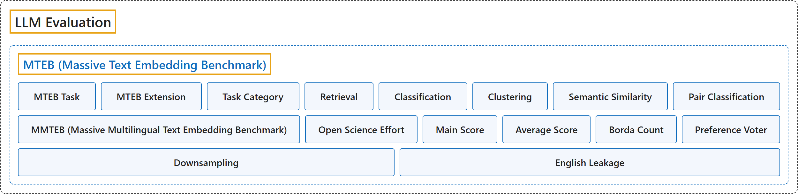

MTEB
Classification

Glossary
| Term | Definition | 中文翻译 | Source |
|---|---|---|---|
| MTEB (Massive Text Embedding Benchmark) MTEB（大规模文本嵌入基准） |
"MTEB is the go-to documentation for evaluating embeddings models across a variety of tasks, modalities and domains." | MTEB 是评测嵌入模型的首选文档，覆盖多种任务、模态和领域。 | MTEB, n.d.-a, "MTEB", para. 2 |
| MTEB Task MTEB 任务 |
(context) "MTEB covers more than a 1000 different tasks from covering a diverse set of tasks from historic Swedish patent classification to documentation retrieval for Python." | （语境）MTEB 涵盖一千多项不同任务，种类多样，从历史上的瑞典专利分类到 Python 文档检索。 | MTEB, n.d.-a, "MTEB", para. 2 |
| MTEB Extension MTEB 扩展 |
(context) "This package was initially introduced as a package for evaluating text embeddings predominantly for English, but have since been extended for broad languages coverage and multiple modalities" | （语境）这个包最初是作为主要针对英语的文本嵌入评测包推出的，后来已扩展到广泛的语言覆盖和多种模态。 | MTEB, n.d.-a, "MTEB", para. 3 |
| Task Category 任务类别 |
"While MTEB covers multiple task types, we categorize them into 5 broad categories based on the type of evaluation they require, these categories are not mutually exclusive but provide a useful way to navigate the large collection of tasks in MTEB." | MTEB 涵盖多种任务类型，我们把它们按所需的评测类型分为 5 个大类；这些类别并不互斥，但为浏览 MTEB 中的大量任务提供了一个有用的途径。 | MTEB, n.d.-b, "Tasks", para. 1 |
| Retrieval 检索 |
"Asymmetric matching between queries and a corpus across different embedding regions." | 查询与语料库之间的非对称匹配，跨越不同的嵌入区域。 | MTEB, n.d.-b, "Tasks", list item 1 |
| Classification 分类 |
"Embeddings linearly separable by category, evaluated using a classifier or regression probe." | 嵌入可按类别线性分开，用分类器或回归探针来评测。 | MTEB, n.d.-b, "Tasks", list item 2 |
| Clustering 聚类 |
"Globally coherent embeddings where distances reflect semantic grouping." | 全局一致的嵌入，其距离反映语义分组。 | MTEB, n.d.-b, "Tasks", list item 3 |
| Semantic Similarity 语义相似度 |
"Fine-grained similarity between item pairs, where cosine similarity reflects human judgments." | 成对条目之间的细粒度相似度，其中余弦相似度反映人的判断。 | MTEB, n.d.-b, "Tasks", list item 4 |
| Pair Classification 成对分类 |
"Embeddings capturing relationships between item pairs, such as entailment or paraphrase." | 嵌入捕捉成对条目之间的关系，如蕴涵或复述。 | MTEB, n.d.-b, "Tasks", list item 5 |
| MMTEB (Massive Multilingual Text Embedding Benchmark) MMTEB（大规模多语言文本嵌入基准） |
(context) "we introduce the Massive Multilingual Text Embedding Benchmark (MMTEB) – a large-scale, community-driven expansion of MTEB, covering over 500 quality-controlled evaluation tasks across 250+ languages." | （语境）我们推出大规模多语言文本嵌入基准（MMTEB），它是对 MTEB 的大规模、社区驱动的扩展，涵盖 250 多种语言中的 500 多项经过质量控制的评测任务。 | Enevoldsen et al., 2025, Abstract |
| Open Science Effort 开放科学协作 |
(context) "To ensure the broad applicability of MMTEB across various domains, we recruited a diverse group of contributors. We actively encouraged participation from industry professionals, low-resource language communities, and academic researchers. To clarify authorship assignment and recognize desired contributions, we implemented a point-based system, similar to Lovenia et al. (2024). To facilitate transparency, coordination was managed through GitHub." | （语境）为确保 MMTEB 在各领域广泛适用，我们招募了多样的贡献者群体。我们积极鼓励业界专业人士、低资源语言社区和学术研究者参与。为明确署名分配并认可所需的贡献，我们实行了一套积分制，类似 Lovenia 等（2024）。为便于透明，协调工作通过 GitHub 进行。 | Enevoldsen et al., 2025, section 2.1, para. 1 |
| Main Score 主得分 |
"The primary metric used to evaluate task performance." | 用于评估任务表现的主要指标。 | Enevoldsen et al., 2025, appendix B.4, Table 5 |
| Average Score 平均得分 |
(context) "For our performance metrics, we report average scores across all tasks, scores per task category, and weighted by task category." | （语境）在表现指标上，我们报告所有任务上的平均得分、各任务类别的得分，以及按任务类别加权的得分。 | Enevoldsen et al., 2025, section 3.2, para. 1 |
| Borda Count 波达计数 |
(context) "We compute model ranks using the Borda count method (Colombo et al., 2022), derived from social choice theory." | （语境）我们用 Borda 计数法（Colombo 等，2022）计算模型排名，该方法源自社会选择理论。 | Enevoldsen et al., 2025, section 3.2, para. 1 |
| Preference Voter 偏好投票者 |
(context) "To compute this score, we consider each task as a preference voter voting for each model, and scores are aggregated according to the Borda Count method." | （语境）为计算这一得分，我们把每项任务视为一个偏好投票者，为每个模型投票，得分按 Borda 计数法汇总。 | Enevoldsen et al., 2025, section 3.2, para. 1 |
| Downsampling 降采样 |
(context) "we introduce a novel downsampling method based on inter-task correlation, ensuring a diverse selection while preserving relative model rankings." | （语境）我们引入一种基于任务间相关性的新降采样方法，确保选择多样，同时保持模型的相对排名。 | Enevoldsen et al., 2025, Abstract |
| English Leakage 英语泄漏 |
(context) "While MMTEB filters out machine-translated datasets, it permits (human) translations. This inclusion leads to tasks like SIB200ClusteringS2S, where labels from English samples are transferred to their translations, potentially introducing bias towards English or models trained on translated content." | （语境）MMTEB 虽然过滤掉了机器翻译的数据集，但允许（人工）翻译。这一做法带来了像 SIB200ClusteringS2S 这样的任务：英语样本的标签被转用到其译文上，可能引入偏向英语或偏向用译文训练的模型的偏差。 | Enevoldsen et al., 2025, "Limitations", "English Leakage" |
References
Enevoldsen, K., Chung, I., Kerboua, I., Kardos, M., Mathur, A., Stap, D., Gala, J., Siblini, W., Krzemiński, D., Winata, G. I., Sturua, S., Utpala, S., Ciancone, M., Schaeffer, M., Sequeira, G., Misra, D., Dhakal, S., Rystrøm, J., Solomatin, R., . . . Muennighoff, N. (2025). MMTEB: Massive multilingual text embedding benchmark (arXiv:2502.13595). arXiv. https://doi.org/10.48550/arXiv.2502.13595
MTEB. (n.d.-a). MTEB: Massive Text Embedding Benchmark [Documentation]. Retrieved November 10, 2026, from https://docs.mteb.org/
MTEB. (n.d.-b). Overview. In MTEB documentation. Retrieved November 10, 2026, from https://docs.mteb.org/overview/